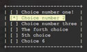

|  |
basicmenu.h
1.0.0
integrate a menu in your console program easily
|
a strcuture for menu More...
#include <basicmenu.h>
Data Fields | |
| int | index |
| char | item [255] |
| struct custom_Menu * | last |
a strcuture for menu
any item of the menu has: string item[255], the index number, the adress of the pointer for the next item
| int index |
the index of the item
| char item[255] |
string with max lenght 255 character.
| struct custom_Menu* last |
a pointer to the next item